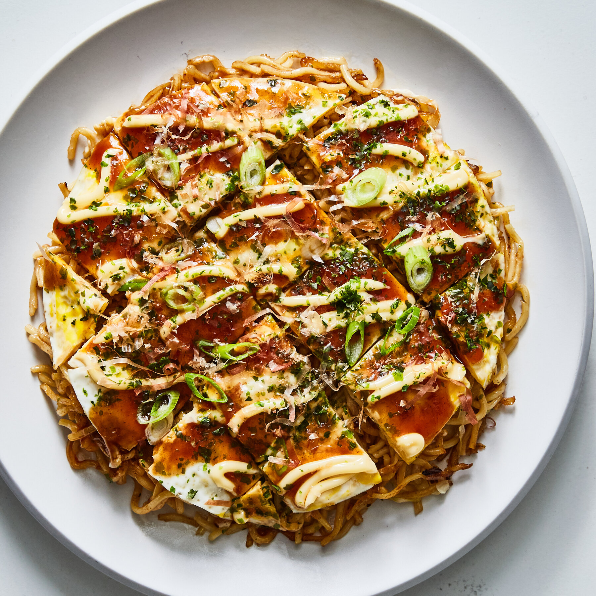

Okonomiyaki
Japanese savory pancake
Okonomiyaki is a popular Japanese pancake made with cabbage, batter, and various fillings such as meat or seafood.
The name means “cook what you like”, which allows people to customize the dish with their favorite ingredients.
Ingredients:
- Flour
- Eggs
- Cabbage
- Meat or seafood
- Special sauce
Preparation:
Mix the ingredients into a batter and cook it on a hot pan like a pancake. Add toppings and sauce before serving.